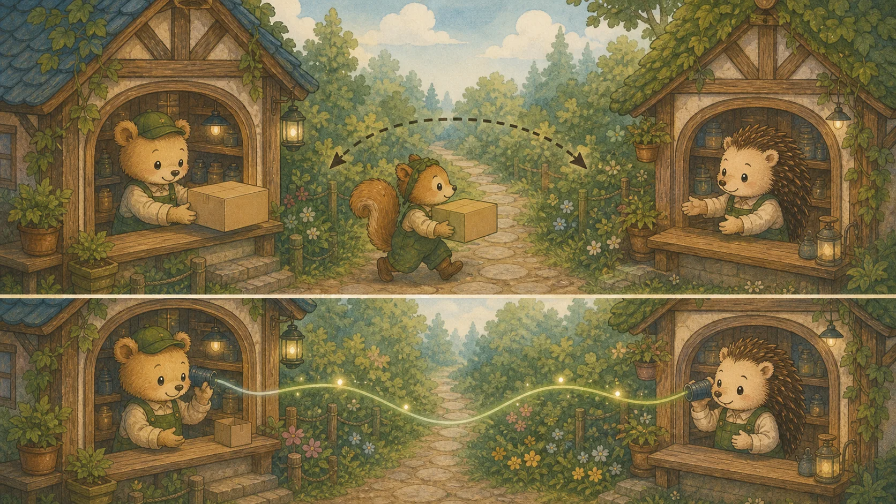

Chapter 07: 풀스택 통합 · WebSocket · TypeScript Axios · Server Actions
API 응답 표준화(ResponseEntity), 전역 에러 핸들링, 파일 업로드, WebSocket/STOMP 실시간 통신, SSE, 환경 변수 관리, 그리고 TypeScript Axios + Zod + Next.js 15 Server Actions + React 19 useActionState까지 — 프론트-백 통합의 클래식 패턴과 2026 모던 패턴을 10개 섹션으로 함께 다룹니다.
🔌 A. API 통합 기초
1. ResponseEntity — API 응답 표준화
백엔드 API가 프론트엔드에 데이터를 보낼 때, 상태코드 + 헤더 + 본문을 명시적으로 제어하여 일관된 응답 형태를 보장합니다.
// 1. 공통 응답 래퍼 클래스 — 모든 API가 이 형태로 통일!
@Getter
@AllArgsConstructor
public class ApiResponse<T> {
private int status;
private String message;
private T data;
public static <T> ApiResponse<T> success(T data) {
return new ApiResponse<>(200, "성공", data);
}
public static <T> ApiResponse<T> created(T data) {
return new ApiResponse<>(201, "생성 성공", data);
}
public static ApiResponse<Void> error(int status, String message) {
return new ApiResponse<>(status, message, null);
}
}
// 2. Controller에서 ResponseEntity + ApiResponse 사용
@RestController
@RequestMapping("/api/products")
@RequiredArgsConstructor
public class ProductController {
private final ProductService productService;
@GetMapping("/{id}")
public ResponseEntity<ApiResponse<ProductResponse>> getProduct(@PathVariable Long id) {
ProductResponse product = productService.findById(id);
return ResponseEntity.ok(ApiResponse.success(product));
// → { "status": 200, "message": "성공", "data": { "id": 1, ... } }
}
@PostMapping
public ResponseEntity<ApiResponse<ProductResponse>> createProduct(
@Valid @RequestBody ProductCreateRequest request) {
ProductResponse created = productService.create(request);
return ResponseEntity.status(201).body(ApiResponse.created(created));
}
}2. @RestControllerAdvice — 전역 에러 핸들링
각 Controller마다 try-catch를 반복하는 대신, 한 곳에서 모든 예외를 잡아 일관된 에러 응답을 보냅니다.
@RestControllerAdvice // 모든 @RestController의 예외를 중앙 포획!
public class GlobalExceptionHandler {
// 비즈니스 예외 (상품 없음, 재고 부족 등)
@ExceptionHandler(BusinessException.class)
public ResponseEntity<ApiResponse<Void>> handleBusiness(BusinessException e) {
return ResponseEntity.status(e.getStatus())
.body(ApiResponse.error(e.getStatus(), e.getMessage()));
// → { "status": 404, "message": "상품을 찾을 수 없습니다", "data": null }
}
// 유효성 검증 실패 (@Valid 실패 시)
@ExceptionHandler(MethodArgumentNotValidException.class)
public ResponseEntity<ApiResponse<Map<String, String>>> handleValidation(
MethodArgumentNotValidException e) {
Map<String, String> errors = new HashMap<>();
e.getBindingResult().getFieldErrors()
.forEach(err -> errors.put(err.getField(), err.getDefaultMessage()));
return ResponseEntity.badRequest()
.body(new ApiResponse<>(400, "유효성 검증 실패", errors));
// → { "status": 400, "data": { "email": "이메일 형식이 아닙니다" } }
}
// 기타 모든 예외 (최후 방어선)
@ExceptionHandler(Exception.class)
public ResponseEntity<ApiResponse<Void>> handleAll(Exception e) {
log.error("서버 에러", e);
return ResponseEntity.internalServerError()
.body(ApiResponse.error(500, "서버 내부 오류가 발생했습니다"));
}
}3. Bean Validation — 요청 데이터 유효성 검증
ProblemDetail (RFC 9457) 표준 에러 응답은 Chapter 4 — 글로벌 예외 처리 섹션에서, 프론트 측 react-hook-form + Zod 스키마 검증은 Chapter 6 — RHF + Zod 섹션에서 깊이 다룹니다.
프론트엔드 검증만으로는 부족합니다. 백엔드에서도 @Valid로 이중 검증해야 합니다.
public record ProductCreateRequest(
@NotBlank(message = "상품명은 필수입니다")
String name,
@NotNull(message = "가격은 필수입니다")
@Min(value = 1000, message = "가격은 1000원 이상이어야 합니다")
Integer price,
@NotBlank(message = "카테고리는 필수입니다")
String category,
@Size(max = 500, message = "설명은 500자 이내여야 합니다")
String description
) {}
// Controller에서 @Valid로 검증 활성화
@PostMapping
public ResponseEntity<?> create(@Valid @RequestBody ProductCreateRequest req) {
// 유효성 실패 → MethodArgumentNotValidException → GlobalExceptionHandler가 처리!
return ResponseEntity.ok(productService.create(req));
}
// 주요 검증 어노테이션:
// @NotNull — null 불가
// @NotBlank — null, "", " " 불가 (문자열 전용)
// @NotEmpty — null, "" 불가 (컬렉션도 가능)
// @Min/@Max — 숫자 범위
// @Size — 문자열/컬렉션 길이
// @Email — 이메일 형식
// @Pattern — 정규식 매칭📁 B. 파일 업로드 & 환경 변수
4. 파일 업로드 — Multipart (이미지 업로드)
상품 이미지 등 파일을 백엔드로 전송할 때 Multipart/form-data 형식을 사용합니다.
@PostMapping(value = "/api/products/image", consumes = MediaType.MULTIPART_FORM_DATA_VALUE)
public ResponseEntity<ApiResponse<String>> uploadImage(
@RequestParam("file") MultipartFile file) {
// 1. 파일 유효성 검증
if (file.isEmpty()) throw new BusinessException(400, "파일이 비어있습니다");
if (file.getSize() > 5 * 1024 * 1024) throw new BusinessException(400, "5MB 초과");
// 2. 고유 파일명 생성 (중복 방지)
String fileName = UUID.randomUUID() + "_" + file.getOriginalFilename();
// 3. 저장 (실무에서는 S3에 업로드)
Path path = Paths.get("uploads/" + fileName);
Files.copy(file.getInputStream(), path);
return ResponseEntity.ok(ApiResponse.success("/uploads/" + fileName));
}function ImageUpload() {
const handleUpload = async (e) => {
const file = e.target.files[0];
const formData = new FormData();
formData.append("file", file); // key는 백엔드 @RequestParam과 일치!
const { data } = await api.post("/api/products/image", formData, {
headers: { "Content-Type": "multipart/form-data" },
});
console.log("업로드 URL:", data.data); // "/uploads/uuid_image.jpg"
};
return <input type="file" accept="image/*" onChange={handleUpload} />;
}5. 환경 변수 관리 — .env & application.yml
API 키, DB 비밀번호 등 민감 정보를 코드에 하드코딩하면 보안 사고가 발생합니다. 환경 변수로 분리합니다.
🔧 Spring Boot (application.yml)
// application.yml
spring:
datasource:
url: ${DB_URL} // 환경 변수 참조
password: ${DB_PASS}
jwt:
secret: ${JWT_SECRET}
expiration: 3600000 // 1시간
// 사용: @Value("${jwt.secret}")⚛️ Next.js (.env.local)
// .env.local (Git 제외!)
NEXT_PUBLIC_API_URL=http://localhost:8080
DATABASE_URL=postgresql://...
// 사용 (NEXT_PUBLIC_ 접두사만 브라우저 노출)
const api = axios.create({
baseURL: process.env.NEXT_PUBLIC_API_URL,
});
// ⚠️ NEXT_PUBLIC_ 없는 변수는 서버에서만 접근 가능!📡 C. WebSocket & 실시간 통신
6. HTTP vs WebSocket — 통신 방식 비교
💡 비유로 이해하기: 택배 vs 전화
HTTP는 택배 — 매번 "보내기 → 기다리기 → 받기"를 반복합니다. 새 소식이 있는지 확인하려면 계속 택배를 보내야 합니다(Polling). WebSocket은 전화 — 한번 연결하면 양쪽이 아무 때나 실시간으로 대화할 수 있습니다.

7. Spring Boot WebSocket 서버 — STOMP 브로커 설정
@Configuration
@EnableWebSocketMessageBroker
public class WebSocketConfig implements WebSocketMessageBrokerConfigurer {
@Override
public void registerStompEndpoints(StompEndpointRegistry registry) {
// 클라이언트가 연결할 WebSocket 엔드포인트
registry.addEndpoint("/ws-shop")
.setAllowedOrigins("http://localhost:3000") // CORS 허용
.withSockJS(); // 레거시(WebSocket 미지원) 폴백 — 2026 대부분 브라우저는 네이티브 지원, 구형 대상 아니면 생략 가능
}
@Override
public void configureMessageBroker(MessageBrokerRegistry registry) {
// 구독 목적지 접두사 (클라이언트가 구독하는 주소)
registry.enableSimpleBroker("/topic", "/queue");
// 메시지 전송 접두사 (클라이언트가 서버로 보낼 때)
registry.setApplicationDestinationPrefixes("/app");
}
}
// 주문 생성 시 → 구독자 전원에게 실시간 브로드캐스트!
@Service
@RequiredArgsConstructor
public class OrderService {
private final SimpMessagingTemplate messagingTemplate;
@Transactional
public OrderResponse createOrder(OrderRequest req) {
Order order = orderRepository.save(Order.create(req));
// 실시간 알림 발송! → /topic/orders 구독자 전원 수신
messagingTemplate.convertAndSend("/topic/orders",
Map.of("message", "새 주문 #" + order.getId(), "data", order));
return OrderResponse.from(order);
}
}8. STOMP 클라이언트 — React에서 실시간 알림 수신
"use client";
import { useEffect, useRef } from "react";
import SockJS from "sockjs-client";
import { Client } from "@stomp/stompjs";
export function useOrderNotification(onNewOrder) {
const clientRef = useRef(null);
useEffect(() => {
// 1. STOMP 클라이언트 생성
const client = new Client({
webSocketFactory: () => new SockJS("http://localhost:8080/ws-shop"),
reconnectDelay: 5000, // 끊기면 5초 후 자동 재연결
onConnect: () => {
console.log("WebSocket 연결 성공!");
// 2. /topic/orders 채널 구독
client.subscribe("/topic/orders", (message) => {
const orderEvent = JSON.parse(message.body);
onNewOrder(orderEvent); // 콜백 실행!
});
},
onDisconnect: () => console.log("WebSocket 연결 해제"),
});
client.activate();
clientRef.current = client;
// 3. 컴포넌트 언마운트 시 연결 해제 (메모리 누수 방지!)
return () => client.deactivate();
}, [onNewOrder]);
return clientRef;
}
// 사용:
// function AdminDashboard() {
// useOrderNotification((event) => {
// showToast(`🔔 ${event.message}`, "success");
// });
// return <h1>관리자 대시보드</h1>;
// }9. SSE (Server-Sent Events) — 서버→클라이언트 단방향 실시간
WebSocket이 양방향이라면, SSE는 서버에서 클라이언트로의 단방향 실시간 푸시입니다. 알림, 진행률 표시 등 서버→클라이언트만 필요할 때 더 간단합니다.
🔧 Spring Boot SSE
@GetMapping(value = "/api/notifications/stream",
produces = MediaType.TEXT_EVENT_STREAM_VALUE)
public SseEmitter streamNotifications() {
SseEmitter emitter = new SseEmitter(30_000L);
notificationService.addEmitter(emitter);
return emitter;
}
// 이벤트 발행:
// emitter.send(SseEmitter.event()
// .name("order")
// .data(orderData));⚛️ React SSE 수신
useEffect(() => {
const source = new EventSource(
"/api/notifications/stream"
);
source.addEventListener("order", (e) => {
const data = JSON.parse(e.data);
showToast(`🔔 ${data.message}`);
});
return () => source.close(); // 클린업!
}, []);10. 2026 풀스택 패턴 — TypeScript Axios + Next.js Server Actions
지금까지 다룬 Axios + REST + WebSocket 흐름은 여전히 유효하지만, 2026년 실무 코드는 TypeScript와 Server Actions로 한 단계 진화했습니다. 본 섹션은 동일한 주문 시나리오를 모던 패턴으로 다시 작성합니다.
// api/orders.ts
import axios, { AxiosError } from "axios";
import { z } from "zod";
// 1. 요청·응답 스키마 (Chapter 6 RHF + Zod와 동일)
const OrderRequestSchema = z.object({
productId: z.number().int().positive(),
quantity: z.number().int().min(1).max(99)
});
type OrderRequest = z.infer<typeof OrderRequestSchema>;
const OrderResponseSchema = z.object({
id: z.number(),
status: z.enum(["PENDING", "PAID", "DELIVERED"]),
total: z.number()
});
type OrderResponse = z.infer<typeof OrderResponseSchema>;
// ProblemDetail (Chapter 4 RFC 9457)과 매핑되는 에러 타입
interface ProblemDetail {
type: string;
title: string;
status: number;
detail?: string;
errors?: Record<string, string>;
}
// 2. 인터셉터로 토큰 자동 주입
const api = axios.create({ baseURL: "/api" });
api.interceptors.request.use(cfg => {
const token = localStorage.getItem("accessToken");
if (token) cfg.headers.Authorization = `Bearer ${token}`;
return cfg;
});
// 3. 타입 안전한 API 함수
export async function createOrder(req: OrderRequest): Promise<OrderResponse> {
// 클라이언트 측 검증 (빠른 실패)
const parsed = OrderRequestSchema.parse(req);
try {
const res = await api.post<OrderResponse>("/orders", parsed);
return OrderResponseSchema.parse(res.data); // 응답도 검증
} catch (e) {
if (axios.isAxiosError<ProblemDetail>(e) && e.response) {
const problem = e.response.data;
throw new Error(`${problem.title}: ${problem.detail ?? ""}`);
}
throw e;
}
}// app/actions/order-actions.ts
"use server";
import { revalidatePath } from "next/cache";
import { z } from "zod";
const OrderActionSchema = z.object({
productId: z.coerce.number().int().positive(),
quantity: z.coerce.number().int().min(1).max(99)
});
export async function placeOrderAction(prevState: unknown, formData: FormData) {
// 1. FormData를 스키마로 검증
const parsed = OrderActionSchema.safeParse({
productId: formData.get("productId"),
quantity: formData.get("quantity")
});
if (!parsed.success) {
return { ok: false, errors: parsed.error.flatten().fieldErrors };
}
// 2. DB 직접 호출 (Server Component이므로 가능)
const order = await db.order.create({ data: parsed.data });
// 3. 관련 페이지 캐시 무효화
revalidatePath("/orders");
return { ok: true, order };
}// app/orders/new/page.tsx (Client Component)
"use client";
import { useActionState } from "react";
import { placeOrderAction } from "@/app/actions/order-actions";
export default function NewOrderForm() {
// useActionState: 액션 결과를 상태로 받음 (이전 useFormState에서 이름 변경)
const [state, formAction, isPending] = useActionState(placeOrderAction, null);
return (
<form action={formAction}>
<input name="productId" type="number" required />
<input name="quantity" type="number" required min={1} max={99} />
<button type="submit" disabled={isPending}>
{isPending ? "주문 처리 중..." : "주문하기"}
</button>
{state?.errors && (
<ul style={{color:"red"}}>
{Object.entries(state.errors).map(([field, msgs]) =>
<li key={field}>{field}: {msgs?.join(", ")}</li>
)}
</ul>
)}
{state?.ok && <p>✅ 주문 {state.order?.id} 생성 완료</p>}
</form>
);
}전통 fetch/Axios vs Server Action 선택 기준:
📡 TypeScript Axios 유지 시나리오
독립 백엔드 (Spring Boot) 호출, WebSocket/SSE와 결합, 외부 공개 API 호출, 복잡한 인터셉터 체인이 필요한 경우
⚡ Server Action 적합 시나리오
Next.js 단독 풀스택 (DB 직접 접근), 단순 폼 제출, revalidatePath/redirect와 자연스러운 결합. 단, Spring 백엔드 연동 시엔 Server Action 안에서 fetch로 호출
⛓️ 폼 검증 깊이는 Chapter 6 — RHF + Zod, 백엔드 에러 표준은 Chapter 4 — ProblemDetail에서.
📚 07챕터 헷갈리는 용어 사전
🛠️ 직접 만들어보기 — "이걸로 만들 수 있나?" 체크포인트
읽기만으로는 복귀가 안 됩니다. 프론트(Ch5/6)와 백엔드(Ch2/4)를 실제로 연결해보세요 — 여기가 풀스택의 진짜 시작입니다.
- 타입 안전 Axios 클라이언트로 Ch4 Spring API 호출 — 인터셉터로 JWT 자동 주입
- 백엔드
ProblemDetail에러를 프론트에서 파싱해 사용자 메시지로 표시 - 주문 생성 → 성공 시 실시간 알림 1개 구현 (WebSocket STOMP 토스트 또는 SSE)
- (선택) 같은 기능을 Next.js Server Action +
useActionState로도 만들어 두 방식 비교